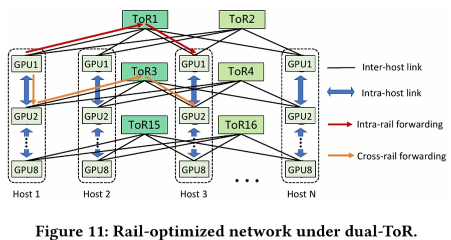
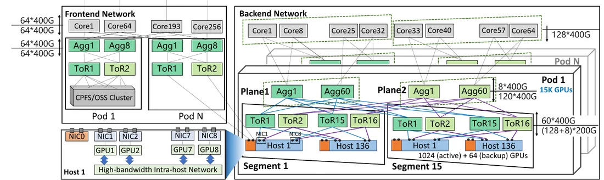
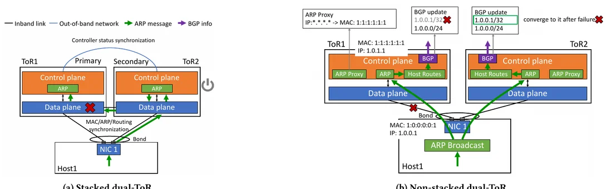
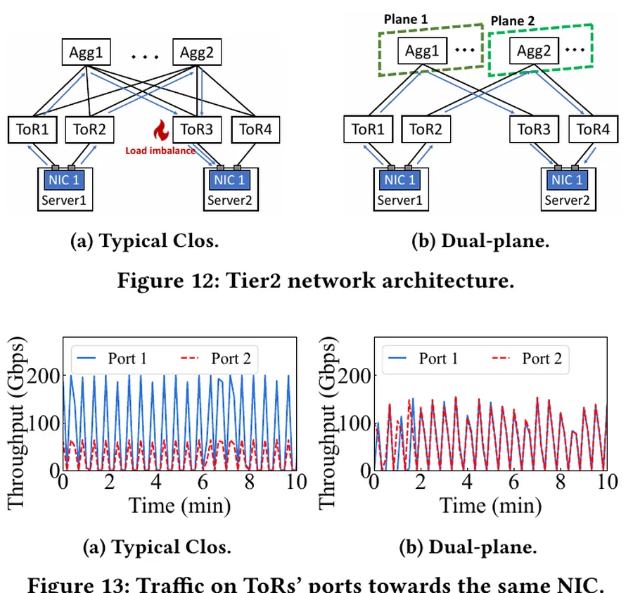
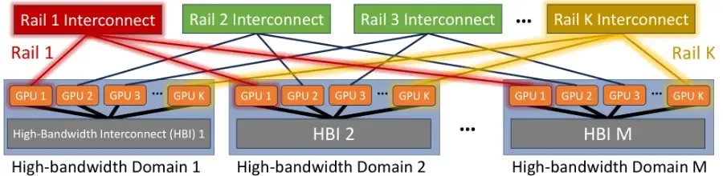
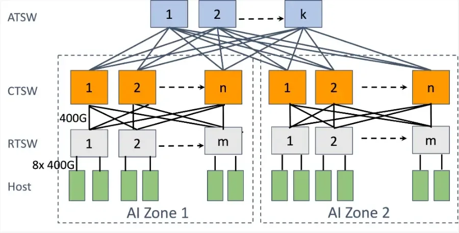
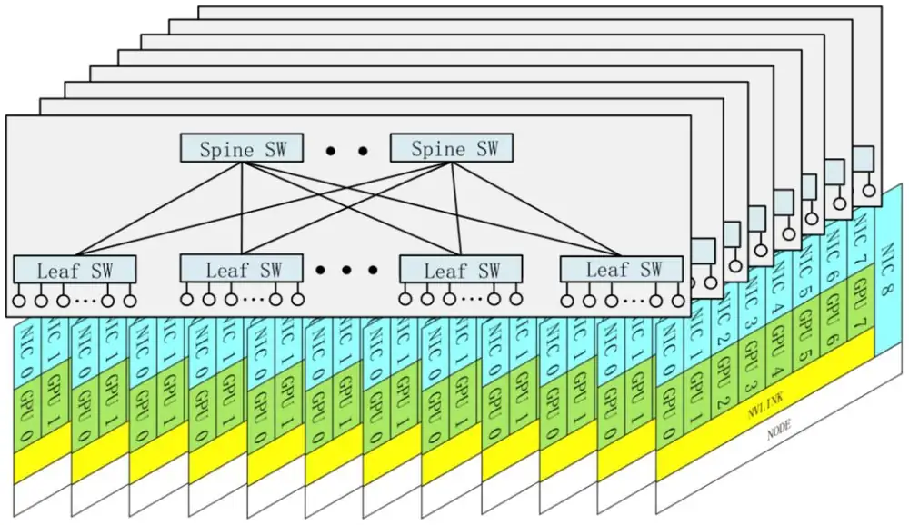
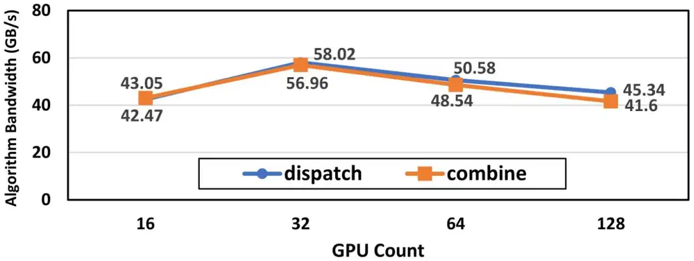
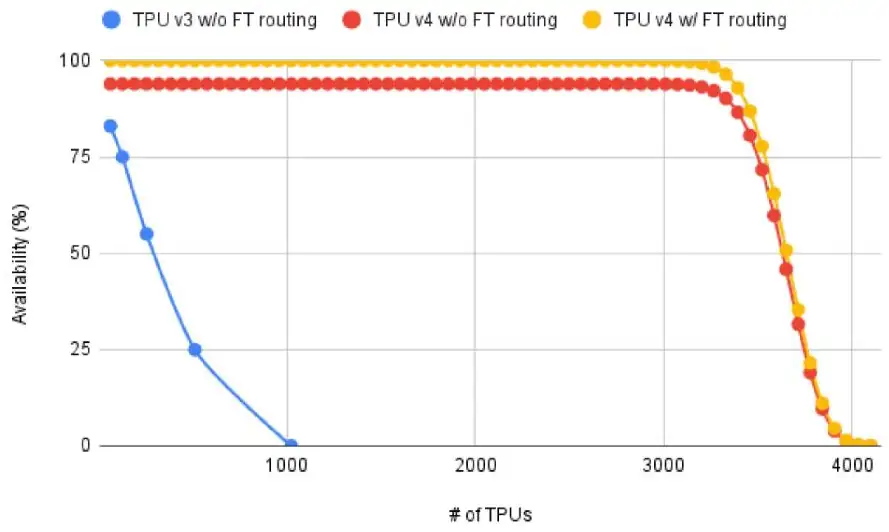

Topology: how switches are wired into a network拓樸：交換器如何連成一個網路
Learn how switches are wired into a network (the Clos), how to size one from the switch radix, where designs save money by thinning links, how rails match the traffic of Chapter 3, how HPN fits 15,000 GPUs in two tiers, how wiring adds redundancy, and what the torus alternative looks like.了解交換器如何連成網路（Clos）、如何從交換器基數推算網路規模、設計在哪裡以較細的鏈路省錢、rail 如何對應第 3 章的流量、HPN 如何在兩層中放進 15,000 顆 GPU、接線如何提供備援，以及環面（torus）這個替代方案。
This chapter builds on Chapters 2, 3, 4, 5. These earlier terms appear most often below; each chip links to its definition.
New terms in this chapter (22)本章新名詞（22）
Each term is defined in the text where it first appears; the link jumps there. Terms from earlier chapters are listed under "Before you start".
每個名詞都在它第一次出現的段落中定義，點連結可跳過去。前面各章的名詞列在「開始之前」。
- Topology拓樸 How the switches and links are wired together. 交換器與鏈路如何接在一起。
- Clos network, fat treeClos 網路、胖樹（fat tree） Tiers of switches in which every switch of one tier connects to every switch of the next, giving many equal paths. 多層交換器，每層的每台都連到下一層的每台，提供許多等價路徑。
- Leaf, spine, core, tierLeaf、spine、core、層（tier） A leaf (top-of-rack) switch connects hosts; spines connect leaves; a core tier connects groups of spines. Leaf（機櫃頂）交換器接主機；spine 連接 leaf；core 層再連接多組 spine。
- ToRToR Top-of-rack switch: the leaf switch that the servers of a rack (or a rail group) plug into. 機櫃頂交換器：一個機櫃（或一組 rail）的伺服器所接的 leaf 交換器。
- Non-blocking非阻塞 Every host can send at full rate at once, because each tier has as much bandwidth up as down. 每台主機能同時全速傳送，因為每層向上的頻寬等於向下的頻寬。
- Pod, segmentPod、segment A pod is one two-tier Clos joined to others by a thinner tier; a segment is HPN's tier-1 group of 1,024 GPUs. Pod 是一個兩層 Clos，以較細的一層與其他 pod 相連；segment 是 HPN 第一層的 1,024 顆 GPU 群組。
- Bisection bandwidth對分頻寬 The smallest total bandwidth across any cut of the GPUs into two equal halves. 把 GPU 切成相等兩半的任何切法中，跨越切口的最小總頻寬。
- AI Zone (RTSW, CTSW, ATSW)AI Zone（RTSW、CTSW、ATSW） Meta's non-blocking two-tier block of rack switches (RTSW) and cluster switches (CTSW); aggregator switches (ATSW) join the zones. Meta 的非阻塞兩層區塊，由機櫃交換器（RTSW）與叢集交換器（CTSW）組成；聚合交換器（ATSW）連接各 zone。
- RailRail All GPUs with the same local rank across servers, and the network that joins them. 跨伺服器中本地 rank 相同的所有 GPU，以及連接它們的網路。
- Rail-optimized wiringRail 最佳化接線 NIC k of every server goes to the same leaf (rail k), so same-rank traffic crosses one switch; spines join the rails. 每台伺服器的第 k 張 NIC 接到同一台 leaf（rail k），同 rank 流量只過一台交換器；spine 把各 rail 連起來。
- PXNPXN NCCL's PCIe × NVLink path: data first hops over NVLink to the GPU on the destination's rail, whose NIC sends it. NCCL 的 PCIe × NVLink 路徑：資料先經 NVLink 移到目的地那條 rail 上的 GPU，再由它的 NIC 送出。
- Dual-ToR雙 ToR（dual-ToR） Each NIC has two ports wired to two different ToR switches, so one switch or link failure does not cut the host off. 每張 NIC 的兩個埠接到兩台不同的 ToR，單一交換器或鏈路故障不會讓主機斷線。
- Aggregation layer聚合層 HPN's name for the second tier of switches, above the ToRs. HPN 對 ToR 之上第二層交換器的稱呼。
- Dual-plane雙平面（dual-plane） The tier above the ToRs is split into two separate halves, and each ToR of a pair connects to only one of them. ToR 之上的那一層分成兩個獨立的半邊，一對 ToR 各只連到其中一半。
- Rail-onlyRail-only A proposal that keeps one full network per rail and removes the spine; cross-rail traffic first crosses NVLink. 每條 rail 保留一個完整網路、移除 spine 的提案；跨 rail 流量先經 NVLink。
- Multi-plane fat-tree (MPFT)多平面 fat tree（MPFT） Separate fabrics per NIC index: GPU i and NIC i of every node attach to plane i, and no switch joins two planes. 依 NIC 編號分開的網路：每個節點的 GPU i 與 NIC i 接到平面 i，沒有交換器連接兩個平面。
- Node-limited routing節點受限路由 An MoE rule that sends each token's experts to at most M nodes, so a token crosses the network at most M times. MoE 規則：每個詞元的專家最多分布在 M 個節點，詞元最多跨網路 M 次。
- Torus環面（torus） Chips wired to their neighbors in a grid whose rows wrap around; TPU v4 uses three dimensions, six links per chip. 晶片在網格中與鄰居相連、每列首尾相接；TPU v4 用三維，每顆晶片六條鏈路。
- Optical circuit switch (OCS)光路交換器（OCS） A switch of tiny mirrors that connects one fiber to another; it never reads packets and changes connections in milliseconds. 以微鏡連接兩條光纖的交換器；不讀封包，可在毫秒級改變連線。
- ICIICI Inter-chip interconnect: the direct links between TPU chips. 晶片間互連：TPU 晶片之間的直接鏈路。
- Slice切片（slice） The set of TPU cubes given to one job and wired into one torus by the OCSes. 分配給一個工作、由 OCS 接成一個環面的一組 TPU cube。
- DragonflyDragonfly A topology family from HPC: groups of routers, each group joined to every other group by a long link. 源自 HPC 的拓樸家族：路由器分成群組，每個群組以長鏈路連到其他每個群組。
6.1From one switch to a network: the Clos從一台交換器到一個網路：Clos
Chapter 2 described one switch. A training cluster needs thousands of them, and the way they are wired together is the network's topology. This chapter starts with the topology that almost every data center uses and sizes it from the switch radix. Then it follows the three production designs of this book through their choices, and ends with one alternative.
第 2 章描述了一台交換器。訓練叢集需要數千台，而它們連接的方式就是網路的拓樸（topology）。本章從幾乎所有資料中心都採用的拓樸開始，從交換器基數推算它的規模；接著跟著本書的三個生產設計看它們如何取捨，最後介紹一個替代方案。
Almost every data center uses a Clos topology, also called a fat tree or leaf-spine. Servers connect to leaf switches, also called ToR switches ("top of rack") because each usually sits at the top of a rack of servers. Every leaf connects to every spine switch. Any server can reach any other server through three switches (leaf → spine → leaf). If a leaf uses half of its ports for servers and half for spines, the network is non-blocking: all servers can send at full speed at the same time. The ratio of server-side bandwidth to spine-side bandwidth is the oversubscription. 1:1 is non-blocking. 4:1 means four servers share the capacity of one uplink, a link toward the next layer up.
幾乎所有資料中心都用 Clos 拓樸，也叫 fat tree 或 leaf-spine。伺服器接到 leaf 交換器，也叫 ToR 交換器（「top of rack」），因為它通常位在一個伺服器機櫃的頂端。每個 leaf 都接到每一個 spine 交換器。任何伺服器都能經過三台交換器到達任何其他伺服器（leaf → spine → leaf）。如果 leaf 一半的埠接伺服器、一半接 spine，網路就是非阻塞的：所有伺服器可以同時全速發送。伺服器側頻寬與 spine 側頻寬的比值稱為超額認購（oversubscription）。1:1 是非阻塞；4:1 表示四台伺服器共用一條上行鏈路（通往上一層的鏈路）的容量。
Why is it called a tree? Draw a network as levels: hosts at the bottom, switches above them, one switch at the top. Each switch connects to a few below it and one above it, so the drawing looks like an upside-down tree. In a plain tree the top link must carry the traffic of every host below it, so it becomes the bottleneck. A fat tree makes the links "fatter" toward the top, so that every level has the same total capacity. Nobody builds one giant switch for the top; the fat links are built from many identical switches in parallel. That parallel build is the Clos, or leaf-spine, network described above.
為什麼叫「樹」？把網路畫成好幾層：主機在最下面，交換器在上面，最上面是一台交換器。每台交換器往下接幾台、往上接一台，畫起來就像一棵倒過來的樹。在一般的樹裡，最上層的鏈路要承載下方所有主機的流量，所以它成為瓶頸。胖樹（fat tree）讓鏈路越往上越「胖」，使每一層的總容量都相同。沒有人會在頂端蓋一台巨大的交換器；胖的鏈路是由許多相同的交換器並聯而成。這種並聯的做法就是上面說明的 Clos，也就是 leaf-spine 網路。
The port budget of one switch一台交換器的埠預算
Every number here starts with the radix : the ports on one switch chip at a chosen speed. A 25.6 Tb/s chip (Broadcom Tomahawk 4, used by MegaScale) has ports of 400 Gb/s; HPN's 51.2 Tb/s generation has 128; the 102.4 Tb/s chip HPN names as next would have 256. The designer splits the ports into downlinks toward hosts and uplinks toward the next tier. The ratio is the switch's oversubscription; with it is non-blocking: every host under it can send at full rate at once.
這裡的每個數字都從基數（radix） 開始：一顆交換晶片在某個速率下的埠數。25.6 Tb/s 的晶片（MegaScale 使用的 Broadcom Tomahawk 4）有 個 400 Gb/s 埠；HPN 的 51.2 Tb/s 世代有 128 個；HPN 點名為下一代的 102.4 Tb/s 晶片會有 256 個。設計者把埠分成朝向主機的 個下行與朝向上一層的 個上行。比值 是這台交換器的超額認購； 時為非阻塞：底下每台主機都能同時全速發送。
A Clos network (leaf–spine, fat tree) stacks such switches in tiers: hosts attach to leaf switches, every leaf connects to every spine, and in a three-tier design a group of leaves and spines is a pod joined to other pods by a core tier. It stays non-blocking when every tier keeps .
Clos 網路（leaf–spine、fat tree）把這樣的交換器疊成數層：主機接到 leaf，每個 leaf 都連到每一個 spine，在三層設計中一組 leaf 與 spine 是一個 pod，由 core 層與其他 pod 相連。只要每層都維持 ，它就保持非阻塞。
Two tiers兩層
With non-blocking leaves, each leaf has downlinks and uplinks. A spine uses all ports as downlinks, one per leaf, so it serves at most leaves; each leaf needs uplinks to different spines. Therefore:
leaf 非阻塞時，每個 leaf 有 個下行與 個上行。一個 spine 把全部 個埠當下行、每個 leaf 一個，所以最多服務 個 leaf；每個 leaf 需要 條上行接到 個不同的 spine。因此：
- leaves , spines , switches leaf 個、spine 個、交換器 台
- hosts 主機
- leaf–spine links , two transceivers each, so transceivers: for , 16,384 transceivers for 8,192 GPUs before any host cableleaf–spine 鏈路 條，每條兩個光模組，共 個： 時，還沒算主機線纜就有 16,384 個光模組對 8,192 顆 GPU
- longest path 3 switch hops; two GPUs under one leaf need 1最長路徑 3 個交換器跳數；同一 leaf 下的兩顆 GPU 只需 1
Three tiers三層
Past , add a tier. In the -ary fat tree a pod holds leaves and spines wired as a small two-tier Clos; each spine spends ports down and up toward the core. There are pods and cores, each with one link to every pod:
超過 就加一層。在 -ary fat tree 中，一個 pod 有 個 leaf 與 個 spine，接成一個小的兩層 Clos；每個 spine 把 個埠朝下、 個朝 core。共 個 pod 與 台 core，每台到每個 pod 各一條鏈路：
- hosts 主機
- switches 交換器
- inter-switch links at each tier boundary, in total: two links and four transceivers per host交換器間鏈路每個層界 條、共 ：每台主機攤到兩條鏈路、四個光模組
- longest path 5 switch hops, with a choice of path at the leaf and again at the spine最長路徑 5 個交換器跳數，在 leaf 與 spine 各選一次路徑
For the limit is 65,536 hosts under 5,120 switches; MegaScale's 12,288 GPUs need three tiers only because they exceed 2,048. For the limit is 524,288, more than one building can power, which is why HPN calls a third tier its path to 100,000 GPUs. Figure 6.2 draws both counting rules.
時上限是 5,120 台交換器下的 65,536 台主機；MegaScale 的 12,288 顆 GPU 需要三層只是因為超過了 2,048。 時上限是 524,288，超過一棟建築能供電的規模，所以 HPN 把第三層稱為通往 100,000 顆 GPU 的路。圖 6.2 畫出這兩個計數規則。
Animation 6.1 plays one packet through these fabrics, hop by hop, and shows where a switch has a choice of uplinks. Switches make that choice with ECMP (equal-cost multi-path): they compute a hash, a number derived from fields of the packet header, and use it to pick one of the equally good uplinks for the whole flow. Chapter 8 examines how well that works.
動畫 6.1 讓一個封包一跳一跳穿過這些網路，並顯示交換器在哪裡要從多條上行中做選擇。交換器用 ECMP（equal-cost multi-path，等價多路徑）做這個選擇：從封包標頭的欄位算出一個雜湊值（hash），用它為整條流挑出一條同樣好的上行。第 8 章會檢視這樣做的效果。
6.2Oversubscription and bisection: where to be cheap超額認購與二分頻寬：在哪裡省錢
Leaf oversubscription means , so
leaf 超額認購 表示 ，所以
Two-tier hosts become and the spine count falls to . At 2:1 with , and : 10,880 GPUs under 128 leaves and 43 spines, against 8,192 at 1:1. The gain is 1.33×, not 2×, because the spine still caps the fabric at leaves. The loss is that GPUs under different leaves share half the bandwidth they had.
兩層主機數變成 ，spine 數降為 。2:1、 時，、：128 個 leaf 與 43 個 spine 下 10,880 顆 GPU，對照 1:1 的 8,192。增益是 1.33 倍而非 2 倍，因為 spine 仍把網路限制在 個 leaf。損失是不同 leaf 下的 GPU 只剩原本一半的頻寬可共用。
Panel 6.1 applies the formula: choose a radix and a ratio, and read what the extra GPUs cost in cross-leaf bandwidth.
面板 6.1 套用這個公式：選一個基數與一個比例，讀出多出來的 GPU 在跨 leaf 頻寬上的代價。
The oversubscription of a tier is the bandwidth entering it from below divided by the bandwidth that can leave upward. Bisection bandwidth is the smallest total bandwidth across any cut that splits the GPUs into equal halves: Gb/s in a non-blocking Clos of GPUs at 400G, divided by the ratio of each oversubscribed tier the cut crosses. For Llama 3's 3,072-GPU pods with full bisection inside and 1:7 between pods, one question per row:
一層的超額認購是從下方進入的頻寬除以能向上離開的頻寬。對分頻寬（bisection bandwidth）是把 GPU 切成相等兩半的任何切法中跨越切口的最小總頻寬：每顆 400G 的 顆 GPU 非阻塞 Clos 為 Gb/s，再除以切口跨越的每個超額認購層的比例。以 Llama 3 的 3,072 顆 GPU pod 為例，pod 內完整對分、pod 之間 1:7，逐列計算如下：
| Question問題 | Calculation算式 | Result結果 |
|---|---|---|
| Any internal cut of one pod (1,536 GPUs on each side)一個 pod 的任何內部切口（每邊 1,536 顆 GPU） | Tb/s | |
| The cut that isolates one pod, through the 1:7 tier隔開一個 pod 的切口，穿過 1:7 的那一層 | Tb/s | |
| Per GPU across that cut跨越該切口時每顆 GPU 的份額 | Gb/s |
Inside a pod every GPU keeps its full 400 Gb/s across any cut; toward the other pods it gets about 57 Gb/s, a seventh of its NIC. Figure 6.3 draws both cuts.
在 pod 內，每顆 GPU 跨任何切口都保有完整的 400 Gb/s；朝其他 pod 只剩約 57 Gb/s，是它 NIC 的七分之一。圖 6.3 畫出這兩個切口。
Why anyone oversubscribes: ports. Every uplink is a port that holds no GPU, and every spine tier costs switches plus two transceivers per link; a non-blocking three-tier fabric spends five switch ports and four transceivers per host. At the rail-only paper's prices ($694 per 400G port, $199 per transceiver) that is about $4,270 of network per GPU before cables and NICs. Whoever can show that some traffic tolerates less bandwidth can delete uplinks and the switches behind them; the question is which traffic.
為什麼有人要超額認購：埠。每一條上行都是不接 GPU 的埠，而每一層 spine 都要花交換器加每條鏈路兩個光模組；非阻塞的三層網路每台主機花五個交換器埠與四個光模組。以 rail-only 論文的單價（每個 400G 埠 694 美元、每個光模組 199 美元），約為每顆 GPU 4,270 美元的網路，還沒算線纜與 NIC。能證明某些流量忍受得了較少頻寬的人，就能刪掉上行與其後的交換器；問題是哪些流量。
What may cross a thin link什麼可以跨越細鏈路
Tensor parallelism (TP) never crosses an oversubscribed link: it is more than 75% of all bytes and sits on NVLink (rail-only paper). Data parallelism (DP) is the largest network traffic, 5.5 GB per step for GPT-3 175B in HPN's Table 3; it stays where bisection is full, or it is prefetched asynchronously, as Llama 3 does when DP groups span pods. Pipeline parallelism (PP) is small, 6 MB per step, and point-to-point, so HPN sends only PP across the 15:1 core. Placement makes this work: Meta's scheduler, the software that decides which GPUs each rank gets, assigns ranks so the cut between zones carries the least traffic (a minimum-cut placement); HPN's scheduler keeps TP and DP inside a pod; Llama 3 orders its parallelism [TP, CP, PP, DP], innermost first, so the most tolerant dimension spans pods. Without such a scheduler, 1:7 or 15:1 is not a saving but a performance cliff.
張量平行（TP）永遠不跨越超額認購的鏈路：它占全部位元組的 75% 以上，而且走 NVLink（rail-only 論文）。資料平行（DP）是最大的網路流量，HPN Table 3 中 GPT-3 175B 每步 5.5 GB；它留在對分完整的地方，否則非同步預先抓取，Llama 3 的 DP 群組跨 pod 時正是如此。管線平行（PP）很小，每步 6 MB，而且是點對點，所以 HPN 只讓 PP 跨越 15:1 的核心層。擺放讓這一切成立：Meta 的排程器（決定每個 rank 拿到哪些 GPU 的軟體）指派 rank 使 zone 之間的切口承載最少流量（最小切割擺放）；HPN 的排程器把 TP 與 DP 留在 pod 內；Llama 3 把平行化排成 [TP, CP, PP, DP]、最內層優先，所以最能忍受的維度跨 pod。沒有這樣的排程器，1:7 或 15:1 不是節省，而是效能懸崖。
Worked layout: Llama 3 on Meta's cluster算例配置：Llama 3 在 Meta 叢集上
Meta calls its two-tier unit an AI Zone: rack training switches (RTSW, the leaves) and cluster training switches (CTSW, the spines) joined at full bandwidth. A third layer of aggregator training switches (ATSW) joins the zones, with much less bandwidth up than down.
Meta 把它的兩層單位稱為 AI Zone：機櫃訓練交換器（RTSW，即 leaf）與叢集訓練交換器（CTSW，即 spine）以滿頻寬連接。第三層的聚合訓練交換器（ATSW）把各 zone 連起來，往上的頻寬遠少於往下。
Take Table 4, row 2 of the Llama 3 paper and place it on Meta's cluster (Figure 6.4): 16 GPUs per rack, 3,072 per pod at full bisection bandwidth (Llama 3 §3.3.1). The TP group of 8 is one server; a pipeline of 16 stages is 128 GPUs, 8 racks, one model replica. A pod holds 24 of the 128 replicas, so the DP group spans 6 pods. Follow one GPU for one step with the Llama shape (, , , 16 sequences per replica per step, so and ) and the formulas of Section 3.7:
取 Llama 3 論文 Table 4 第二行，放到 Meta 的叢集上（圖 6.4）：每機櫃 16 顆 GPU，每 pod 3,072 顆、完整對分頻寬（Llama 3 §3.3.1）。8 顆的 TP 群組就是一台伺服器；16 個階段的管線是 128 顆 GPU、8 個機櫃、一個模型副本。一個 pod 容納 128 個副本中的 24 個，所以 DP 群組橫跨 6 個 pod。用 Llama 的形狀（、、、每個副本每步 16 條序列，所以 、）與第 3.7 節的公式，追蹤一顆 GPU 一步的流量：
| Dimension | 維度 | Formula | 公式 | Per GPU per step | 每顆 GPU 每步 | Link | 鏈路 | Time at link speed | 以鏈路速度計的時間 |
|---|---|---|---|---|---|---|---|---|---|
| TP | ≈ 240 GB | NVLink, 450 GB/s each way | NVLink，每方向 450 GB/s | ≈ 0.53 s | |||||
| DP (FSDP, FP32 reduce-scatter + BF16 all-gather) | DP（FSDP，FP32 reduce-scatter + BF16 all-gather） | ≈ 19 GB | NIC, 50 GB/s, crosses pods | NIC，50 GB/s，跨 pod | ≈ 0.38 s | ||||
| PP | ≈ 1.1 GB | NIC, 50 GB/s, inside the pod | NIC，50 GB/s，pod 內 | ≈ 0.02 s | |||||
| Compute (for scale) | 計算（供比較） | — | the GPU itself | GPU 本身 | ≈ 6.2 s |
Against a step time of about 6 seconds, TP would cost 8.5% if nothing overlapped, DP 6%, PP under 1%. DP's 19 GB would take 2.7 s on the 1:7 inter-pod links if every GPU in a pod sent at once, so it must be prefetched and spread over the backward pass; TP's 240 GB could never leave the server. Panel 5.3 computes the same quantities for any layout.
對照約 6 秒的步時間，若完全不重疊 TP 會花掉 8.5%、DP 6%、PP 不到 1%。若一個 pod 內所有 GPU 同時送，DP 的 19 GB 在 1:7 的 pod 間鏈路上要花 2.7 秒，所以它必須預先抓取並分散到整個反向；TP 的 240 GB 永遠不能離開伺服器。面板 5.3 可對任何配置計算同樣的量。
6.3Rails: matching the wiring to the trafficRail：讓接線配合流量
Look at the 8 NICs in one server. In a plain Clos, all 8 would go to the same leaf. In a rail-optimized design, NIC 1 of every server goes to leaf 1, NIC 2 goes to leaf 2, and so on. Each leaf is a rail. Why? Because GPU in server A mostly talks to GPU in server B: the collective rings are built that way. With rails, that traffic stays on one leaf and never touches a spine. Traffic that must cross rails can first hop across NVLink inside the server, then go out on the right rail. The Alibaba figure below shows both paths.
看一台伺服器裡的 8 張 NIC。在普通 Clos 裡，8 張都接到同一個 leaf。在 rail-optimized 設計裡，每台伺服器的 NIC 1 都接到 leaf 1、NIC 2 都接到 leaf 2，依此類推。每個 leaf 就是一條 rail。為什麼？因為伺服器 A 的第 顆 GPU 主要和伺服器 B 的第 顆 GPU 通訊：集體通訊的環就是這樣建的。有了 rail，這些流量留在一個 leaf 上、完全不經過 spine。必須跨 rail 的流量可以先在伺服器內走 NVLink 跳一下，再從正確的 rail 出去。下面 Alibaba 的圖同時畫出這兩種路徑。
A rail is the set of GPUs with the same local rank in every server: all GPU 0s form rail 0. The rail-only paper calls the server a high-bandwidth (HB) domain (8 GPUs on NVSwitch at 3.6 Tb/s each in a DGX H100, 256 in a DGX GH200); a domain of size gives rails. In plain wiring all 8 NICs of a server go to one leaf, so a leaf with 64 downlinks holds 8 servers. In rail-optimized wiring NIC of every server goes to leaf , so eight leaves hold 64 servers, 512 GPUs. Both use the same switches and links; they differ only in which cable meets which port.
rail 是每台伺服器中本地 rank 相同的 GPU 集合：所有 GPU 0 構成 rail 0。Rail-only 論文把伺服器稱為高頻寬（HB）域：DGX H100 中 NVSwitch 上每顆 3.6 Tb/s 的 8 顆 GPU，或 DGX GH200 的 256 顆；大小 的域給出 條 rail。一般接線中一台伺服器的 8 張 NIC 全接到一個 leaf，所以 64 個下行的 leaf 容納 8 台伺服器。Rail-optimized 接線中每台伺服器的第 張 NIC 接到第 個 leaf，所以八個 leaf 容納 64 台伺服器、512 顆 GPU。兩者用同樣的交換器與鏈路；差別只在哪條線接哪個埠。
Why rail-optimized is the default. The traffic that leaves a server is PP and DP, both between GPUs with the same local rank (rail-only paper, §III). With rails it crosses one switch across 64 servers instead of 8 and never meets a spine hash; HPN measured all-reduce on 448 GPUs inside one segment up to 59.3% faster than on its old three-tier network. Cross-rail traffic can take the 3-hop spine path, or NCCL's PXN (PCIe × NVLink) sends it over NVLink to the same-server GPU on the destination's rail and out through that rail's switch; NVLink is about 9× the NIC, so the first hop is cheap. The traffic matrix of Section 3.9, computed rather than measured, shows the first claim.
為什麼 rail-optimized 是預設。離開伺服器的流量是 PP 與 DP，都在本地 rank 相同的 GPU 之間（rail-only 論文 §III）。有了 rail，它在 64 台而非 8 台伺服器內只跨一台交換器，且永遠不碰 spine 的雜湊；HPN 量到 448 顆 GPU 在一個 segment 內的 all-reduce 比舊的三層網路快最多 59.3%。跨 rail 的流量可以走 3 跳的 spine 路徑，或由 NCCL 的 PXN（PCIe × NVLink）先經 NVLink 送到同伺服器中位於目的 rail 的 GPU，再從那條 rail 的交換器出去；NVLink 約是 NIC 的 9 倍，第一跳很便宜。第 3.9 節的流量矩陣（計算而非量測）呈現了第一個說法。
Why "same rank k" is the natural partner. In phase two, the only traffic that leaves a server flows between GPU of one server and GPU of another; pipeline send/recv has the same shape when stages sit one per server. This is the measurement behind rail-optimized wiring: if NIC of every server connects to the same leaf switch, rail , then every inter-server collective of a well-placed job crosses one switch and never touches the spine. The algorithm's traffic pattern and the fabric's wiring are the same picture drawn twice. HPN uses it to serve 1,024 GPUs with one switch hop (HPN §5.2); the rail-only paper proposes removing the spine because, for dense models, nothing crosses it.
為什麼「同一個 rank k」是天然的夥伴。在第二階段，唯一離開伺服器的流量是一台伺服器的 GPU 與另一台的 GPU 之間；當管線階段一台伺服器放一個時，管線的 send/recv 也是同樣的形狀。這就是 rail-optimized 接線背後的量測：若每台伺服器的 NIC 都接到同一台 leaf 交換器（rail ），那麼配置良好的任務的每一次跨伺服器集體操作都只跨一台交換器，永遠不碰 spine。演算法的流量模式與網路的接線是同一張圖畫了兩次。HPN 用它以一跳交換器服務 1,024 顆 GPU（HPN §5.2）；rail-only 論文則提議移除 spine，因為對稠密模型而言沒有東西會跨越它。
PXN: crossing rails through NVLinkPXN：經由 NVLink 跨 rail
PXN. When a GPU must send to a GPU on a different rail, as in an all-to-all, NCCL can first move the data over NVLink to the local GPU on the destination's rail and let that GPU's NIC send it. NVIDIA calls this PXN (PCIe × NVLink). The detour costs one NVLink hop at about 9× the NIC speed, so it adds about one ninth to the transfer. The rail-only paper relies on PXN for every cross-rail message and reports that a mixture-of-experts all-to-all slows by 8.2% on A100 and 11.2% on H100 systems as a result (§IV). That slowdown is why HPN kept an any-to-any second tier.
PXN。當一顆 GPU 必須送給不同 rail 上的 GPU 時（例如 all-to-all），NCCL 可以先把資料透過 NVLink 搬到位於目的地 rail 上的本地 GPU，再讓那顆 GPU 的 NIC 送出。NVIDIA 稱之為 PXN（PCIe × NVLink）。繞路的代價是一跳約 9 倍 NIC 速度的 NVLink，所以為傳輸增加約九分之一。Rail-only 論文對每一則跨 rail 訊息都依賴 PXN，並報告混合專家的 all-to-all 因此在 A100 系統慢 8.2%、H100 系統慢 11.2%（§IV）。這個減速就是 HPN 保留任意對任意第二層的原因。
The figure below draws both paths on rail-optimized wiring. A slice that stays on its rail crosses one switch. A PXN message first moves over NVLink to the GPU that sits on the destination's rail.
下圖在 rail-optimized 接線上畫出這兩條路徑。留在自己 rail 上的片段只跨一台交換器。PXN 訊息則先經 NVLink 搬到位於目的地 rail 上的 GPU。
6.4HPN: 15,000 GPUs in two tiersHPN：兩層放進 15,000 顆 GPU
HPN pushes the two-tier idea as far as the 51.2 Tb/s chip allows. One segment is 1,024 GPUs under 16 ToR switches, plus 64 spare GPUs kept idle to replace failed ones (Chapter 10). Each host has 8 NICs of 2×200G; the two ports of each NIC go to two different ToRs (dual-ToR), so one ToR failure does not stop the host. Tier 2 joins 15 segments into a pod of 15,000 GPUs, and the tier-2 switches, the aggregation layer, are split into two independent planes. The paper reports that 96.3% of their jobs fit in one segment, so most traffic never leaves tier 1. Cross-pod links are oversubscribed 15:1 and carry only PP traffic.
HPN 把兩層的想法推到 51.2 Tb/s 晶片所允許的極限。一個 segment 是 16 台 ToR 交換器下的 1,024 顆 GPU，另加 64 顆閒置待命、用來替換故障者的備用 GPU（第 10 章）。每台主機有 8 張 2×200G 的 NIC；每張 NIC 的兩個埠接到兩個不同的 ToR（dual-ToR），所以單一 ToR 故障不會讓主機停擺。第二層把 15 個 segment 連成一個 15,000 顆 GPU 的 pod，而第二層的交換器，即聚合層，被拆成兩個獨立的 plane（平面）。論文報告 96.3% 的任務可以塞進一個 segment，所以多數流量根本不離開第一層。跨 pod 鏈路做 15:1 超額認購，只承載 PP 流量。
A plain non-blocking 128-port leaf holds 64 GPUs; HPN holds 1,024 in one tier with three moves that Table 2 records. Breakout: each 400G downlink is split by cable into two 200G ports, so a ToR has 136 host ports (128 active, 8 backup) and 60 uplinks. Dual-ToR: each NIC's two 200G ports go to two ToRs, so a ToR pair holds 128 GPUs. Rail-optimized wiring: GPU of every host goes to ToR pair , so eight pairs, 16 ToRs, form a segment of 128 hosts × 8 = 1,024 GPUs, one switch hop apart on each rail. Downlink to uplink bandwidth is .
一個普通非阻塞的 128 埠 leaf 容納 64 顆 GPU；HPN 用 Table 2 記錄的三個動作在一層內容納 1,024 顆。分接（breakout）：每個 400G 下行用線纜拆成兩個 200G 埠，所以一台 ToR 有 136 個主機埠（128 使用中、8 備援）與 60 條上行。Dual-ToR：每張 NIC 的兩個 200G 埠接到兩台 ToR，所以一對 ToR 容納 128 顆 GPU。Rail-optimized 接線：每台主機的 GPU 接到第 對 ToR，所以八對、16 台 ToR 構成一個 128 台主機 × 8 = 1,024 顆 GPU 的 segment，在每條 rail 上彼此只隔一個交換器跳數。下行對上行頻寬是 。
Figure 6.6 shows this wiring for three of the eight ToR pairs.
圖 6.6 畫出八對 ToR 中三對的接線。

Table 2 continues at tier 2: 2K GPUs per pod for a plain 51.2T Clos, 4K with dual-ToR, 8K with dual-plane, 15K with 15:1 toward the core. Dual-plane sends all 60 uplinks of a ToR to one plane, so each aggregation switch sees one ToR per pair and the pod doubles; 15:1 then gives each aggregation switch 120 ports down and 8 up: 120 ToRs per plane × 128 GPUs per pair = 15,360. Every move is a port count, not new hardware.
Table 2 接著到第二層：普通 51.2T Clos 每個 pod 2K 顆 GPU，加 dual-ToR 4K，加 dual-plane 8K，朝核心層 15:1 後 15K。Dual-plane 把一台 ToR 的 60 條上行全部送到同一個 plane，每台聚合交換器只看到每對 ToR 中的一台，pod 加倍；15:1 接著讓每台聚合交換器有 120 個埠朝下、8 個朝上：每個 plane 120 台 ToR × 每對 128 顆 GPU = 15,360。每一步都是埠數，不是新硬體。
| Radix (chip) | 基數 （晶片） | Two-tier GPUs / switches | 兩層 GPU / 交換器 | Two-tier transceivers | 兩層光模組 | Three-tier GPUs / switches | 三層 GPU / 交換器 |
|---|---|---|---|---|---|---|---|
| 32 (12.8T) | 512 / 48 | 1,024 | 8,192 / 1,280 | ||||
| 64 (25.6T) | 2,048 / 96 | 4,096 | 65,536 / 5,120 | ||||
| 128 (51.2T) | 8,192 / 192 | 16,384 | 524,288 / 20,480 | ||||
| 256 (102.4T at 400G) | 32,768 / 384 | 65,536 | 4,194,304 / 81,920 |
All rows are non-blocking. Doubling the radix quadruples a two-tier fabric and multiplies a three-tier fabric by eight; chip generations matter more to topology than any routing trick.
各列皆為非阻塞。基數加倍讓兩層網路變四倍、三層變八倍；晶片世代對拓樸的影響大過任何路由技巧。
Two tiers of 128-port leaves at 1:1 hold 8,192 GPUs. If every GPU attaches with 2 × 200G to two ToRs in two planes, as in HPN, how many fit? Set Panel 6.5 to radix 128, 2 tiers, 1:1, dual-ToR on. Then ask what did not change.
128 埠 leaf、1:1 的兩層容納 8,192 顆 GPU。如果每顆 GPU 像 HPN 一樣以 2 × 200G 接到兩個 plane 的兩台 ToR，能容納多少？把面板 6.5 設成基數 128、2 層、1:1、dual-ToR 開。然後問什麼沒變。
Worked example: HPN's port budget算例：HPN 的埠預算
Start with 128 ports of 400G. HPN points 60 up to the aggregation layer. Of the remaining 68, it breaks 64 out into 128 × 200G active host ports and 4 into 8 × 200G backup ports. Under dual-ToR, every GPU's NIC has one port on each ToR of a pair, so a ToR pair serves 128 GPUs, and a segment puts 8 pairs together with rail-optimized wiring. The budget, one question per row:
從 128 個 400G 埠開始。HPN 把 60 個朝上接到聚合層。剩下的 68 個，把 64 個拆成 128 × 200G 的使用中主機埠、4 個拆成 8 × 200G 的備援埠。在 dual-ToR 之下，每顆 GPU 的 NIC 在一對 ToR 的每一台上各有一個埠，所以一對 ToR 服務 128 顆 GPU，一個 segment 以 rail-optimized 接線把 8 對組在一起。逐列計算這份預算：
| Question問題 | Calculation算式 | Result結果 |
|---|---|---|
| Uplink bandwidth: 60 ports of 400G上行頻寬：60 個 400G 埠 | Tb/s | |
| Active downlink bandwidth: 128 host ports of 200G使用中的下行頻寬：128 個 200G 主機埠 | Tb/s | |
| Downlink over uplink, active ports下行除以上行，使用中的埠 | ||
| The same if the 8 backup ports (8 × 200G) were busy too若 8 個備援埠（8 × 200G）也在忙 | 27.2 : 24 | |
| Active GPUs per segment: 8 ToR pairs of 128每個 segment 使用中的 GPU：8 對 ToR、每對 128 顆 | GPUs 顆 GPU | |
| Spare GPUs: 8 backup ports on each of the 8 pairs備用 GPU：8 對 ToR 各 8 個備援埠 | GPUs 顆 GPU | |
| Hosts per segment, 8 GPUs each (HPN Figure 7)每個 segment 的主機數，每台 8 顆 GPU（HPN Figure 7） | hosts 台主機 |
The active ratio, 1.067:1, is what the paper calls close to non-blocking (HPN §5.1). With the backup ports busy it would be 1.133:1, but they are spares for hosts that fail, so the active ratio is the one that matters. The 1,024 active GPUs plus 64 spares are the 136 hosts per segment in HPN's Figure 7, shown here as Figure 6.7. MegaScale's Tomahawk 4 ToR follows the same arithmetic at half the size: 64 ports, 32 up, 32 down, the downlinks broken out to 200G host links.
使用中的比例 1.067:1，論文稱之為接近非阻塞（HPN §5.1）。備援埠也在忙時會是 1.133:1，但它們是主機故障時的備品，所以重要的是使用中的比例。1,024 顆使用中的 GPU 加 64 顆備用，就是 HPN Figure 7（本章圖 6.7）中每個 segment 的 136 台主機。MegaScale 的 Tomahawk 4 ToR 以一半的規模遵循同樣的算術：64 個埠，32 上、32 下，下行拆分成 200G 的主機鏈路。

Keep 51.2 Tb/s but switch the ports to 800G. The chip now has 64 ports. With the same split and breakout, how many GPUs does a ToR pair serve, and what happens to the per-GPU bandwidth? Which of the two configurations would HPN's "1,024 GPUs in one tier" goal force you to choose?
維持 51.2 Tb/s，但把埠切到 800G。晶片現在有 64 個埠。同樣的切分與拆分下，一對 ToR 服務幾顆 GPU？每顆 GPU 的頻寬怎麼變？HPN「一層容納 1,024 顆 GPU」的目標會迫使你選哪一種配置？
6.5Redundancy by wiring以接線提供備援
Chapter 10 treats failures as events. Here they are port counts: every redundancy mechanism is a decision about where a second cable goes.
第 10 章把故障當成事件。這裡它們是埠數：每一個備援機制都是關於第二條線要接到哪裡的決定。
Dual-ToR without stacking不堆疊的雙 ToR
Mechanism. Each HPN NIC has two 200G ports that go to two different ToRs. The host bonds them into one interface with one IP and one MAC and sends its address announcements (ARP) to both ToRs; each ToR turns them into a route to that host and advertises it to the switches above with the routing protocol BGP. The host itself runs no routing protocol, and the two ToRs share no link and no state. Why not stacking. Stacked designs (vPC, M-LAG) join the two switches with a peer link and make them act as one; more than 40% of critical failures in Alibaba's traditional data centers came from that design, because a switch whose data plane dies while its control plane still answers makes the healthy peer shut itself down. In-service upgrades assume small version differences, which 70% of Alibaba's ToR upgrades did not meet. Numbers. When HPN failed one NIC–ToR link during a LLaMa-7B training test on 256 GPUs, throughput fell 6.25%, which matches the arithmetic: a host has 16 × 200G ports and one is down, 1/16. In the single-ToR baseline the job halted. Figure 6.8 compares the two designs.
機制。每張 HPN 的 NIC 有兩個 200G 埠，接到兩台不同的 ToR。主機把它們綁成一個介面、一個 IP、一個 MAC，並把位址宣告（ARP）送給兩台 ToR；每台 ToR 把它轉成通往該主機的路由，再用路由協定 BGP 向上層交換器發布。主機本身不跑路由協定，兩台 ToR 之間沒有鏈路、也沒有共享狀態。為什麼不堆疊。堆疊式設計（vPC、M-LAG）用一條對等鏈路把兩台接起來、當成一台；阿里傳統資料中心超過 40% 的重大故障來自這種設計，因為一台資料平面死掉而控制平面仍有回應的交換器，會讓健康的同儕把自己關掉。不中斷升級假設版本差異很小，阿里 70% 的 ToR 升級不符合。數字。HPN 在 256 顆 GPU 上的 LLaMa-7B 訓練測試中弄斷一條 NIC–ToR 鏈路，吞吐下降 6.25%，與算術相符：主機有 16 個 200G 埠、壞了一個，1/16。單 ToR 基線中任務停擺。圖 6.8 比較這兩種設計。

Dual-plane: the path is fixed on entry雙平面：路徑在進入時就固定
Mechanism. The two ToRs of every pair belong to two planes: ToR 1 sends all 60 uplinks to the 60 aggregation switches of plane 1, ToR 2 to plane 2. A packet leaving a plane-1 ToR can only arrive at the destination's plane-1 ToR, so nothing above a ToR has a choice and there is no hash at tier 2. Why. Dual-ToR creates the problem: traffic toward one NIC arrives from any aggregation switch and must converge on one of the NIC's two ToRs, and with tens of flows the hash that picks the ToR is unfair; in a GPT-3 175B job one port toward a NIC carried 3× the other's load. Numbers. After dual-plane the two ports carried equal load (Figure 6.9, bottom) and the average queue fell 91.8%, from 267 KB to 20 KB. Counting. 240 ToRs × 60 uplinks = 14,400 links per pod; each plane's 60 aggregation switches × 120 downlinks = 7,200, two planes 14,400. Losing one aggregation switch costs 1.7% of its plane.
機制。每一對的兩台 ToR 分屬兩個 plane：ToR 1 把全部 60 條上行送到 plane 1 的 60 台聚合交換器，ToR 2 送到 plane 2。從 plane 1 的 ToR 出去的封包只可能到達目的地的 plane 1 ToR，所以 ToR 之上沒有選擇，第二層沒有雜湊。為什麼。Dual-ToR 製造了這個問題：流向一張 NIC 的流量從任何聚合交換器到來、必須收斂到該 NIC 兩台 ToR 之一，幾十條流時挑 ToR 的雜湊並不公平；在一個 GPT-3 175B 的任務中，朝一張 NIC 的某個埠承載另一個 3 倍的負載。數字。Dual-plane 之後兩個埠負載相等（圖 6.9 下），平均佇列減少 91.8%，從 267 KB 降到 20 KB。計數。每個 pod 240 台 ToR × 60 條上行 = 14,400 條鏈路；每個 plane 60 台聚合交換器 × 120 個下行 = 7,200，兩個 plane 14,400。少一台聚合交換器只損失該 plane 的 1.7%。

Backup ports and uplink headroom備用埠與上行餘裕
HPN reserves 8 of each ToR's 136 host ports as backup: across a segment's 16 ToRs that attaches 8 spare hosts, 64 spare GPUs beside the 1,024 active ones, so a failed host is replaced inside the segment without changing the job's placement. Meta's spare capacity sits one tier up: the 1:1.125 RTSW ratio buys 12.5% more uplink than downlink bandwidth, so two failed uplinks leave the rack at or above 1:1. In both cases redundancy is bought with ports that carry nothing most of the time; the alternative, a halted job, costs the hours since the last checkpoint on every GPU in it.
HPN 把每台 ToR 的 136 個主機埠中的 8 個保留為備援：整個 segment 的 16 台 ToR 合起來接 8 台備用主機，即 1,024 顆使用中 GPU 旁的 64 顆備用 GPU，所以故障的主機在 segment 內被取代，任務的擺放不必改。Meta 的備用容量在上一層：RTSW 的 1:1.125 買到比下行多 12.5% 的上行頻寬，所以兩條上行故障後機櫃仍在 1:1 以上。兩種情況下，備援都是用大部分時間什麼都不載的埠買來的；另一個選擇——任務停擺——的代價是其中每一顆 GPU 從上次檢查點以來的那幾個小時。
Animation 6.2 breaks links one at a time in the three designs and shows where the traffic goes.
動畫 6.2 在三種設計中逐一弄斷鏈路，顯示流量往哪裡去。
Panel 6.3 counts the bandwidth that is left after each failed link in the three designs of this section.
面板 6.3 計算本節三種設計在每一條鏈路故障後剩下的頻寬。
6.6Rail-only: delete the spineRail-only：拿掉 spine
If no traffic needs to cross rails, the spine carries nothing useful. The rail-only design keeps one full-bisection network per rail and removes everything above it; a rail of at most GPUs needs one switch, a larger rail its own small Clos. Cross-rail traffic always takes two steps, NVLink inside the source server and then the destination rail's switch: PXN made mandatory, with the forwarding GPU lending its NIC. Figure 6.10 is the paper's drawing of the design.
如果沒有流量需要跨 rail，spine 就沒承載任何有用的東西。Rail-only 設計為每條 rail 保留一個完整對分的網路並移除其上的一切；最多 顆 GPU 的 rail 只需一台交換器，更大的 rail 有自己的小 Clos。跨 rail 流量永遠走兩步：來源伺服器內的 NVLink，再到目的 rail 的交換器：這是被強制的 PXN，由轉送的 GPU 借出它的 NIC。圖 6.10 是論文對這個設計的圖示。
| Traffic | 流量 | Plain | 一般接線 | Rail-optimized | Rail-optimized | Rail-only | Rail-only |
|---|---|---|---|---|---|---|---|
| Same server | 同一台伺服器 | NVLink, no switch | NVLink，不經交換器 | NVLink, no switch | NVLink，不經交換器 | NVLink, no switch | NVLink，不經交換器 |
| Same rank, other server | 相同 rank，另一台伺服器 | 1 switch within a leaf (8 servers), else 3 | 同 leaf（8 台）內 1 跳，否則 3 跳 | 1 switch within the rail group (64 servers), else 3 | rail 群組（64 台）內 1 跳，否則 3 跳 | 1 switch (or the rail's small Clos) | 1 跳（或該 rail 的小 Clos） |
| Other rank, other server | 不同 rank，另一台伺服器 | 1 switch if same leaf, else 3 | 同 leaf 時 1 跳，否則 3 跳 | 3 switches, or NVLink + 1 switch with PXN | 3 跳，或用 PXN 走 NVLink + 1 跳 | NVLink + 1 switch, always | 永遠是 NVLink + 1 跳 |
| Spine hash decisions | Spine 雜湊決策 | Every flow leaving the leaf | 每條離開 leaf 的流 | Cross-group or cross-rail flows only | 只有跨群組或跨 rail 的流 | None | 沒有 |

Animation 6.3 sends one cross-rail transfer three ways: over the spine, with PXN, and in a rail-only network.
動畫 6.3 用三種方式送一筆跨 rail 的傳輸：經 spine、用 PXN，以及在 rail-only 網路中。
The cost model. The paper prices a 400G switch port at $694 and a transceiver at $199 (18 W and 9 W), two transceivers per link. Its headline case is 32,768 GPUs in DGX GH200 systems, so and each rail holds 128 GPUs; with 128-port switches one switch per rail is enough, 256 switches with no inter-switch optics. The rail-optimized Clos for the same GPUs needs three tiers: 512 leaves, 512 spines, 256 cores, 1,280 switches, 65,536 inter-switch links carrying 131,072 transceivers. About $153 million against $36 million: the paper reports 77%. At radix 64 the saving is only 38%, because a rail of 128 GPUs no longer fits one switch; each rail needs 4 leaves and 2 spines, 1,536 switches in total, while the Clos baseline costs the same. Across its configurations the paper finds 38–77% less network cost and 37–75% less power, $117–234 million and 1.7–6.9 MW for 32K- or 64K-GPU clusters. The saving exceeds the switch fraction because deleting the spine also deletes the optics on every inter-switch link. Panel 6.5 reproduces these numbers.
成本模型。論文把一個 400G 交換器埠定價 694 美元、一個光模組 199 美元（18 W 與 9 W），每條鏈路兩個光模組。主要案例是 DGX GH200 系統中的 32,768 顆 GPU，所以 、每條 rail 128 顆 GPU；用 128 埠交換器每條 rail 一台就夠，256 台、沒有交換器間的光學元件。同樣 GPU 的 rail-optimized Clos 需要三層：512 個 leaf、512 個 spine、256 個 core，1,280 台交換器，65,536 條交換器間鏈路上有 131,072 個光模組。約 1.53 億美元對 3,600 萬美元：論文報告 77%。基數 64 時只省 38%，因為 128 顆 GPU 的 rail 塞不進一台交換器；每條 rail 需要 4 個 leaf 與 2 個 spine，共 1,536 台，而 Clos 基線成本不變。跨所有配置，論文得到網路成本減少 38–77%、功耗減少 37–75%，對 32K 或 64K GPU 叢集為 1.17–2.34 億美元與 1.7–6.9 MW。節省超過交換器的比例，是因為刪掉 spine 也刪掉每條交換器間鏈路上的光學元件。面板 6.5 重現這些數字。
Expert parallelism breaks the rail assumption專家平行打破 rail 的假設
Why EP breaks the rail assumption. TP stays inside the server and DP/PP partners share a local rank. EP does neither: expert lives on some GPU, and tokens come to it from every GPU in the EP group, whatever their rank. In a rail-only network (one switch per rail, no spine; Figure 6.11) a cross-rail message must first hop over NVLink to the right rail inside the sender's server; the rail-only authors measured that detour at 8.2% slowdown of the all-to-all on DGX A100 and 11.2% on DGX H100 (rail-only §IV). HPN cites exactly this for keeping an any-to-any tier 2 although rail-only would let a pod hold 120K GPUs (HPN §10). For a network designer, EP is the parallelism that asks for a tier that joins the rails. Section 3.8 shows two production MoE systems that train without one: DeepSeek-V3 forwards over NVLink first, and MegaScale-MoE keeps EP inside the server.
為什麼 EP 打破 rail 假設。TP 留在伺服器內，DP/PP 的夥伴共享本地 rank。EP 兩者都不是：專家 住在某顆 GPU 上，token 從 EP 群組中的每一顆 GPU 來到它那裡，不管 rank 是什麼。在 rail-only 網路（每條 rail 一台交換器、沒有 spine；圖 6.11）中，跨 rail 的訊息必須先在發送端伺服器內透過 NVLink 跳到正確的 rail；rail-only 的作者量到這段繞路讓 all-to-all 在 DGX A100 上慢 8.2%、在 DGX H100 上慢 11.2%（rail-only §IV）。HPN 保留任意對任意的第二層——儘管 rail-only 的第二層可以讓一個 pod 容納 120K 顆 GPU——引用的正是這一點（HPN §10）。對網路設計者而言，EP 是要求一層連接各 rail 的那種平行化。第 3.8 節介紹兩個不用這一層就能訓練的生產 MoE 系統：DeepSeek-V3 先經 NVLink 轉送，MegaScale-MoE 則把 EP 留在伺服器內。
Animation 6.4 plays the dispatch and combine of one MoE layer on two servers; switch the network to see where tokens that change rail go with and without a spine.
動畫 6.4 播放兩台伺服器上一個 MoE 層的分派與合併；切換網路，看看要換 rail 的 token 在有與沒有 spine 時怎麼走。
HPN's Table 4, and why HPN refusedHPN 的 Table 4，以及 HPN 為何拒絕
HPN did the same arithmetic for its tier 2: an aggregation layer connecting only same-rail ToRs would hold more than 120,000 GPUs per pod (Table 4), eight times what was built. It refused, and gave two reasons (HPN §10). Mixture-of-experts models send every token to the GPU holding its expert, an all-to-all between GPUs on different rails; the rail-only paper itself puts that collective at 27% of MoE-1.3B traffic and estimates, analytically for an evenly spread all-to-all, a completion-time slowdown of 8.2% (A100) to 11.2% (H100). In serverless use a host is shared by tenants, customers who each rent some of its GPUs and NICs, and a tenant cannot relay through another tenant's GPU. The rail-only paper names a third limitation itself (§IV-C): a single failed GPU is hard to replace, because the stand-in must sit on the same rail inside a domain with spare NVLink capacity. HPN keeps an any-to-any tier 2 and confines the thin link to tier 3; the two papers agree on the facts and weigh generality differently.
HPN 對自己的第二層做了同樣的算術：只連接同 rail ToR 的聚合層每個 pod 可容納超過 120,000 顆 GPU（Table 4），是所建的八倍。它拒絕了，並給出兩個理由（HPN §10）。混合專家模型把每個 token 送到持有其專家的 GPU，是不同 rail 上 GPU 之間的 all-to-all；rail-only 論文自己把這個集體操作定為 MoE-1.3B 流量的 27%，並以分析方式（假設 all-to-all 平均分散）估計完成時間變慢 8.2%（A100）到 11.2%（H100）。在 serverless 用法中，一台主機由多個租戶（各自租用其中部分 GPU 與 NIC 的客戶）共享，租戶不能透過另一個租戶的 GPU 中繼。Rail-only 論文自己還提到第三個限制（§IV-C）：單顆 GPU 故障很難更換，因為替補者必須在同一條 rail、且位於有多餘 NVLink 容量的域內。HPN 保留任意對任意的第二層，把細的鏈路限制在第三層。兩篇論文對事實沒有異議，只是對通用性的權衡不同。
In Panel 6.4, set the destination to server 20, rank 0 under rail-optimized wiring: the path crosses a spine. Why? Switch to rail-only: the spine disappears. What did rail-only give up, and which slider shows the price?
在面板 6.4，於 rail-optimized 接線下把目的設為伺服器 20、rank 0：路徑經過 spine。為什麼？切到 rail-only：spine 消失。Rail-only 放棄了什麼？哪個滑桿顯示了代價？
6.7The production designs side by side並列比較生產設計
In all three designs, a scheduler, the software that decides which GPUs each job and each rank gets, places the traffic so that thin links carry little (Chapter 11). The table sets them side by side.
三個設計都由排程器——決定每個任務與每個 rank 拿到哪些 GPU 的軟體——安排流量，讓細鏈路承載的流量很少（第 11 章）。下表把它們並列。
| Design | 設計 | Tier 1 (leaf / ToR) | 第一層（leaf / ToR） | Tier 2 | 第二層 | Tier 3 | 第三層 | What crosses the thin link | 什麼流量走細的那段 |
|---|---|---|---|---|---|---|---|---|---|
| Meta AI Zone | RTSW 1:1 → 1:2 → 1:1.125 | RTSW 1:1 → 1:2 → 1:1.125 | CTSW; non-blocking inside the zone | CTSW；zone 內非阻塞 | ATSW, oversubscribed, plain ECMP | ATSW，超額認購，一般 ECMP | The lightest collectives, by min-cut placement | 最輕的集體操作，由 min-cut 擺放決定 | |
| Llama 3 (24K) | Minipack2 ToR, 16 GPUs per rack | Minipack2 ToR，每機櫃 16 顆 GPU | 3,072-GPU pod (192 racks), full bisection | 3,072 顆 GPU 的 pod（192 機櫃），完整對分 | 1:7 between the 8 pods | 8 個 pod 之間 1:7 | DP (FSDP) reduce-scatter and all-gather, prefetched | DP（FSDP）的 reduce-scatter 與 all-gather，可預先抓取 | |
| Alibaba HPN | ToR 1.067:1 (128 active × 200G : 60 × 400G; 1.133:1 with the 8 backup ports busy) | ToR 1.067:1（128 個使用中埠 × 200G : 60 × 400G；8 個備援埠也忙時為 1.133:1） | Aggregation, dual-plane, 120 down / 8 up | 聚合層，dual-plane，120 下 / 8 上 | 15:1 aggregation → core | 聚合層 → 核心層 15:1 | PP send/receive only: 6 MB per step vs 5.5 GB DP, 560 MB TP | 只有 PP 的 send/receive：每步 6 MB，對照 DP 5.5 GB、TP 560 MB | |
| MegaScale | 32 down / 32 up; 200G host links, so one uplink = 2 NICs | 32 下 / 32 上；200G 主機鏈路，一條上行 = 2 張 NIC | 1:1 | 1:1 | 1:1 | 1:1 | Scheduler puts heavy ranks under one ToR set | 排程器把重流量的 rank 放在同一組 ToR 下 |
One rule runs through the table: a link may be thin only if the traffic that crosses it is small, tolerant of delay, or both. Meta writes 1:7 (inside to across) and HPN 15:1 (down to up); both mean the upper tier carries a fraction of what the tier below can generate. Figure 6.12 shows Meta's layout: the thin tier sits above the AI Zones.
表中貫穿一條規則：只有當跨越某條鏈路的流量很小、能忍受延遲、或兩者兼具時，它才可以細。Meta 寫 1:7（內部對跨越），HPN 寫 15:1（下行對上行）；兩者都表示上層只承載下層所能產生的一小部分。圖 6.12 是 Meta 的布局：細的那一層在 AI Zone 之上。

Meta moved its RTSW from 1:1 to 1:2 uplink bandwidth and saw a large gain. The reason is routing, not capacity: with a few elephant flows, ECMP often puts two flows on one uplink (Chapter 8), and a link that is exactly full has no room for that. The final 1:1.125 costs far less than 1:2 and still tolerates two failed uplinks: a 16-GPU rack needs 18 uplinks, and with two down it is back at 16:16. MegaScale splits each 400G ToR downlink into two 200G host links instead, so the ToR stays 32 down and 32 up by port count, but every uplink is twice as fast as any flow that enters it, and two flows that land on the same uplink still fit.
Meta 把 RTSW 從 1:1 的上行頻寬提高到 1:2，看到很大的改善。原因是路由而非容量：只有少數大象流時，ECMP 常把兩條流放到同一條上行（第 8 章），剛好滿載的鏈路沒有空間容納。最終的 1:1.125 成本遠低於 1:2，仍能容忍兩條上行故障：16 顆 GPU 的機櫃需要 18 條上行，壞兩條就回到 16:16。MegaScale 則把每個 400G 的 ToR 下行拆成兩條 200G 主機鏈路，依埠數 ToR 仍是 32 下、32 上，但每條上行的速度是任何進入它的流的兩倍，兩條落在同一條上行的流仍塞得進。
Load the "Rail-only 32K" preset and read the cost, then switch the wiring to rail-optimized. Now set the radix to 64 in both wirings. Why does the saving fall from about 77% to about 38% when nothing else changed?
載入「Rail-only 32K」預設並讀成本，再把接線切到 rail-optimized。然後在兩種接線下都把基數改成 64。為什麼其他都沒變，節省卻從約 77% 掉到約 38%？
6.8Networks for mixture-of-experts: planes and node-limited routing為混合專家設計的網路：平面與節點受限路由
DeepSeek-V3 trains on a multi-plane fat-tree (MPFT). GPU and NIC of every node attach to plane , and each of the 8 planes is a two-tier fat-tree of 64-port 400 Gb/s InfiniBand switches (ISCA §5.1; Figure 6.14). The planes share no switch, so traffic for another plane first crosses NVLink or PCIe inside its node and leaves by another NIC. Two tiers per plane can reach 16,384 GPUs, at about the cost per endpoint of a plain two-tier fat-tree (Table 3, cost model). To test the design, the team re-wired its cluster as a multi-rail fat-tree (MRFT), in which all rails meet in shared spines. The full 2,048-GPU job ran at 272.80 billion tokens per day on MPFT and 272.52 billion on MRFT (Table 4, measured). DeepEP's dispatch and combine reached 42–58 GB/s per GPU on MPFT (Figure 6.15). Per GPU, the scale-out link is one 400 Gb/s NIC, and the scale-up link is NVLink, which the H800 cuts to 400 GB/s.
DeepSeek-V3 在多平面 fat-tree（MPFT）上訓練。每個節點的 GPU 與 NIC 接到平面 ，8 個平面各是一個由 64 埠 400 Gb/s InfiniBand 交換器組成的兩層 fat-tree（ISCA §5.1；圖 6.14）。平面之間不共用交換器，所以要去別的平面的流量必須先在節點內經 NVLink 或 PCIe，再從另一張 NIC 出去。每個平面兩層就能涵蓋 16,384 顆 GPU，每個端點的成本與一般的兩層 fat-tree 差不多（Table 3，成本模型）。為了測試這個設計，團隊把叢集重新接線成 multi-rail fat-tree（MRFT），讓所有 rail 在共用的 spine 交會。完整的 2,048 顆 GPU 任務在 MPFT 上每天訓練 2,728.0 億個 token，在 MRFT 上為 2,725.2 億個（Table 4，實測）。DeepEP 的分派與合併在 MPFT 上達到每顆 GPU 42–58 GB/s（圖 6.15）。每顆 GPU 的 scale-out 鏈路是一張 400 Gb/s NIC，scale-up 鏈路是 NVLink，H800 把它削減到 400 GB/s。

What the papers ask for follows from the ratio of those two links. DeepSeek-V3's NVLink is only about 4 times one NIC, and up to 20 SMs per GPU do the copying. So the paper asks for multi-plane NICs that spread one queue pair over all planes, hardware that forwards and broadcasts for dispatch and reduces for combine, and one network that joins scale-up and scale-out (ISCA §4.4.2, §5.1, §6.5). MegaScale-MoE answers the same gap by keeping EP off the NIC. It notes that DeepEP limits dispatch to 4 nodes because cross-node InfiniBand bandwidth is low, and its own network carries only PP and DP (MegaScale-MoE §8). FAST notes that scale-up bandwidth per GPU stays about ten times scale-out across GPU generations (FAST §1–§2).
論文提出的要求來自這兩種鏈路的比例。DeepSeek-V3 的 NVLink 只有一張 NIC 的約 4 倍，而每顆 GPU 最多要用 20 個 SM 做複製。所以論文要求：能把一個 queue pair 分散到所有平面的多平面 NIC、在分派時做轉送與廣播並在合併時做歸約的硬體，以及一個把 scale-up 與 scale-out 合而為一的網路（ISCA §4.4.2、§5.1、§6.5）。MegaScale-MoE 以讓 EP 不碰 NIC 來回應同一個落差。它指出 DeepEP 因為跨節點的 InfiniBand 頻寬偏低而把分派限制在 4 個節點，而它自己的網路只承載 PP 與 DP（MegaScale-MoE §8）。FAST 指出，歷代 GPU 每顆的 scale-up 頻寬都維持在 scale-out 的十倍左右（FAST §1–§2）。

What this means for the debate of Section 6.6. Rail-only removes the tier that joins the rails, so a cross-rail token must first cross NVLink; HPN keeps an any-to-any tier for EP. The two production systems test this. DeepSeek-V3's planes never meet: no switch joins two planes, as no switch joins two rails in rail-only, although each plane has its own two tiers. It trained as fast as on the network in which the rails meet. MegaScale-MoE sends no EP byte across nodes, so its NICs carry only PP and DP traffic between GPUs of the same local rank. Both rely on a fast scale-up domain that does the cross-rail copying, and on a limit to the EP bytes per token. Without these, the 8.2–11.2% detour cost that rail-only measured (Section 6.6) still applies. These are two jobs on H800 GPUs. They show that MoE training does not require a tier that joins the rails; they do not show that such a tier never helps.
這對第 6.6 節的爭論代表什麼。Rail-only 拿掉連接各 rail 的那一層，所以跨 rail 的 token 必須先走 NVLink；HPN 為了 EP 保留任意對任意的一層。這兩個生產系統正好檢驗了這一點。DeepSeek-V3 的平面彼此從不相連：沒有任何交換器連接兩個平面，就像 rail-only 中沒有交換器連接兩條 rail，只是每個平面各有自己的兩層。它的訓練速度與各 rail 互相交會的網路一樣快。MegaScale-MoE 不讓任何 EP 位元組跨節點，所以它的 NIC 只承載本地 rank 相同的 GPU 之間的 PP 與 DP 流量。兩者都依賴一個快速的 scale-up 域來做跨 rail 的複製，也都限制了每個 token 的 EP 位元組。少了這些，rail-only 量到的 8.2–11.2% 繞路代價（第 6.6 節）依然存在。這只是 H800 上的兩個任務。它們顯示 MoE 訓練並不需要連接各 rail 的那一層，但沒有顯示那一層從來沒有幫助。
Bytes on the wire線上的位元組
DeepSeek-V3 places its 256 routed experts in 8 groups of 32, one group per node. The router picks a token's 8 experts from at most 4 nodes (ISCA §4.3). This is node-limited routing. The token crosses InfiniBand once per destination node, to the GPU with the same index inside that node, so it stays on its own plane. That GPU then forwards it over NVLink to the GPUs that hold its experts (technical report §3.2.2). Dispatch is sent in FP8 with one scale per tile of 1 × 128 values, half the bytes of BF16; combine stays in BF16 (ISCA §3.2). The paper's cost model charges a token of IB traffic when its experts span nodes, against when they span 8 (§4.3, model). NVLink gives about 160 GB/s per GPU and a NIC about 40 GB/s, a ratio of about 4 to 1 (§4.3), so each byte moved from the NIC to NVLink is cheap. Figure 6.16 shows the path of one token.
DeepSeek-V3 把 256 個路由專家分成 8 組、每組 32 個，每個節點一組。路由器從最多 4 個節點中挑出一個 token 的 8 個專家（ISCA §4.3）。這就是節點受限路由。token 對每個目的節點只跨一次 InfiniBand，送到該節點內編號相同的 GPU，所以它留在自己的平面上。那顆 GPU 再經 NVLink 轉送到持有其專家的 GPU（技術報告 §3.2.2）。分派以 FP8 傳送，每 1 × 128 個值的區塊一個縮放因子，位元組是 BF16 的一半；合併仍用 BF16（ISCA §3.2）。論文的成本模型中，專家分布在 個節點的 token 要付 的 IB 流量，分布在 8 個節點時則是 （§4.3，模型）。NVLink 每顆 GPU 約 160 GB/s，一張 NIC 約 40 GB/s，比例約 4 比 1（§4.3），所以把位元組從 NIC 移到 NVLink 很划算。圖 6.16 畫出一個 token 的路徑。
Now the bytes for one GPU, one MoE layer and the forward pass, with a hidden size of about 7,000 (ISCA §2.3.2) and 4,096 tokens per GPU, the setting of the DeepEP test in Figure 6.15. One question per row:
現在算一顆 GPU、一個 MoE 層、正向一次的位元組，隱藏維度約 7,000（ISCA §2.3.2），每顆 GPU 4,096 個 token，也就是圖 6.15 中 DeepEP 測試的設定。逐列計算如下：
| Question問題 | Calculation算式 | Result結果 |
|---|---|---|
| Dispatch per token on IB: FP8, at most 4 nodes每個 token 在 IB 上的分派：FP8、最多 4 個節點 | KB | |
| Combine per token on IB: BF16每個 token 在 IB 上的合併：BF16 | KB84 KB per token both ways來回每個 token 共 84 KB | |
| Both, without the limit: 8 experts on 8 nodes不設上限時的來回：8 個專家在 8 個節點 | KBtwice the IB bytesIB 位元組加倍 | |
| IB bytes per GPU per MoE layer每顆 GPU 每個 MoE 層的 IB 位元組 | MB | |
| Time on one NIC at about 40 GB/s以約 40 GB/s 的一張 NIC 計的時間 | ms | |
| NVLink bytes: 8 forwarded copies each way, 7 of 8 leave the landing GPUNVLink 位元組：來回各轉送 8 份，8 份中有 7 份離開落地的 GPU | MBabout 3.8 ms at 160 GB/s以 160 GB/s 計約 3.8 ms | |
| Compute for the same tokens: 250 GFLOP per token over 61 layers, one third forward, at the measured 432 TFLOP/s (ISCA Tables 2 and 4)同一批 token 的計算：每個 token 250 GFLOP、分到 61 層、正向占三分之一，以實測的 432 TFLOP/s 計（ISCA Table 2 與 Table 4） | ms |
So the node limit halves the IB bytes, from 168 KB to 84 KB per token, and moves the copying to NVLink, which is about 4 times faster. Even then, the NIC needs about 8.6 ms against about 13 ms of compute. That is two thirds of the compute time, so the all-to-all stays hidden only if it overlaps (next subsection). These are model numbers computed from the paper's own configuration. MegaScale-MoE needs no limit, because its EP never leaves the node. For its 352B model a token's dispatch is KiB, and 7 of 8 parts of it cross NVLink: about 44 MB per GPU per layer. Its SP + EP moves 2.9 times fewer bytes than TP for attention and FFN together (our arithmetic from MegaScale-MoE Table 1).
所以節點上限把 IB 位元組減半，從每個 token 168 KB 降到 84 KB，並把複製工作移到快約 4 倍的 NVLink 上。即使如此，NIC 仍需約 8.6 ms，而計算約 13 ms。通訊是計算時間的三分之二，所以 all-to-all 只有在重疊時才藏得住（下一小節）。這些是用論文自身配置算出的模型數字。MegaScale-MoE 不需要上限，因為它的 EP 從不離開節點。它的 352B 模型每個 token 的分派是 KiB，其中 8 分之 7 走 NVLink：每顆 GPU 每層約 44 MB。它的 SP + EP 在注意力與 FFN 合計比 TP 少搬 2.9 倍的位元組（我們依 MegaScale-MoE Table 1 計算）。
Animation 6.5 plays one token's dispatch and combine with and without the node limit; the counter adds up the bytes on the NIC and on NVLink.
動畫 6.5 播放一個 token 在有與沒有節點上限時的分派與合併；計數器累加 NIC 與 NVLink 上的位元組。
6.9Beyond the Clos: torus, optical circuit switches, dragonfly超越 Clos：環面、光路交換器、dragonfly
Google's TPU v4 does not use a Clos at all. 4,096 chips are wired as a 3-D torus: each chip links to six neighbors. There is no packet switch between racks. Instead, optical circuit switches (OCS) connect racks with mirrors, and the connection can be changed in milliseconds. This lets Google carve out a torus of any size for each job, route around a failed rack, and the optical parts cost under 5% of the system. The trade-off is that a torus suits regular, predictable patterns (which dense training has), not arbitrary all-to-all such as the expert traffic of mixture-of-experts models.
Google 的 TPU v4 完全不用 Clos。4,096 顆晶片接成一個 3-D 環面（torus）：每顆晶片連到六個鄰居。機櫃之間沒有封包交換器，而是用光路交換器（OCS）以鏡片連接機櫃，連線可以在毫秒內改變。這讓 Google 能為每個任務切出任意大小的環面、繞過故障的機櫃，而光學部分的成本不到系統的 5%。取捨在於：環面適合規律、可預測的模式（dense 模型的訓練正是如此），不適合任意的 all-to-all，例如混合專家模型的專家流量。
The 3-D torus and its bisection3-D 環面與它的二分頻寬
Mechanism. In a torus there is no switch between accelerators. Each TPU v4 chip has six inter-chip interconnect (ICI) links of 50 GB/s, about 400 Gb/s, one to each neighbor in , and ; the last chip in a row links back to the first, so there is no edge, and chips forward for their neighbors in hardware. For dimensions the longest shortest path, in hops, is
機制。在環面（torus）中加速器之間沒有交換器。每顆 TPU v4 晶片有六條晶片間互連（ICI）鏈路，每條 50 GB/s、約 400 Gb/s，分別通往 、、 的鄰居；每列最後一顆接回第一顆，所以沒有邊緣，晶片以硬體為鄰居轉送。對 的維度，最長的最短路徑（以跳數計）是
For the bisection, take a slice, the set of chips that one job gets, and cut it in half perpendicular to : the cut passes through rings of length , and each ring crosses it twice (once in the middle, once at the wrap-around), so links cross; with that is the minimum over the three axes. Figure 6.17 draws the rule.
算對分時，垂直於 把一個切片（slice，一個任務分到的一組晶片）切成兩半：切面穿過 個長度 的環，每個環跨越兩次（一次在中間、一次在環繞處），所以 條鏈路跨越；在 時這是三個軸中的最小值。圖 6.17 畫出這個規則。
Worked example. Two 512-chip slices, the 8 × 8 × 8 cube and the 4 × 4 × 32 cigar, against 512 GPUs at 400G in a non-blocking Clos. A cut across the longest axis severs 2 links in each ring along that axis, at 50 GB/s per link. The arithmetic, one question per row:
算例。兩個 512 顆晶片的切片——8 × 8 × 8 立方體與 4 × 4 × 32 雪茄——對照 512 顆 400G GPU 的非阻塞 Clos。沿最長軸的切口在該軸的每個環上切斷 2 條鏈路，每條 50 GB/s。逐列計算如下：
| Question問題 | Calculation算式 | Result結果 |
|---|---|---|
| Bisection of the 8 × 8 × 8 cube (64 rings cut)8 × 8 × 8 立方體的對分（切到 64 個環） | TB/s128 links128 條鏈路 | |
| Diameter of the cube (half of each 8-chip ring, three axes)立方體的直徑（每個 8 顆晶片的環取一半，三個軸） | hops跳 | |
| Bisection of the 4 × 4 × 32 cigar (16 rings cut)4 × 4 × 32 雪茄的對分（切到 16 個環） | TB/s32 links32 條鏈路 | |
| Diameter of the cigar (half of the 4-, 4- and 32-chip rings)雪茄的直徑（4、4、32 顆晶片的環各取一半） | hops跳 | |
| Bisection of 512 GPUs at 400G in a non-blocking Clos (256 GPUs per side)非阻塞 Clos 中 512 顆 400G GPU 的對分（每邊 256 顆） | TB/s2× the cube, 8× the cigar立方體的 2 倍、雪茄的 8 倍 |
The Clos has two to eight times the torus bisection, bought with 24 switches (64-port) and about 1,000 transceivers. The cigar fits a 32-stage pipeline, whose traffic runs between neighbors along the long axis; the cube fits a job dominated by all-reduce. Choosing shape and hyperparameters per job gained 1.2–2.3× (TPU v4 Table 3).
Clos 的對分是環面的兩到八倍，代價是 24 台（64 埠）交換器及約 1,000 個光模組。雪茄適合 32 階的管線，其流量沿長軸在鄰居間流動；立方體適合由 all-reduce 主導的任務。依任務選擇形狀與超參數帶來 1.2–2.3 倍的增益（TPU v4 Table 3）。
Optical circuit switches make the torus re-pluggable光路交換器讓環面可以重新插拔
Mechanism. 64 chips in a 4 × 4 × 4 cube fill one rack with electrical links inside. Each of the six faces has 16 chips with one link pointing outward, so 96 optical links leave every rack for 48 optical circuit switches (OCS) of 128 ports plus 8 spares: . Opposite faces of a cube reach the same OCSes, so a mirror setting makes cube A's face the neighbor of any cube B. An OCS is an array of MEMS mirrors; it never decodes a packet and changes a connection in milliseconds. Why. With hosts unavailable 0.1–1.0% of the time, some host in a fixed 4,096-chip torus is always down, and a dead node breaks the torus of the whole slice containing it. With OCSes the scheduler wires any set of working cubes into a torus, and keeping most of the machine doing useful work needs only 99.0–99.5% host availability instead of 99.9%. What else it buys. A slice can be any shape; two slices never share a link or switch (an air gap); and a slice of shape or () can be twisted, its wrap-around links offset to another row, which raised all-to-all throughput 1.63× on 4 × 4 × 8 and 1.31× on 4 × 8 × 8. The optics are under 5% of system cost and 3% of its power.
機制。64 顆晶片排成 4 × 4 × 4 的 cube 裝滿一個機櫃，內部是電鏈路。六個面各有 16 顆晶片、每顆一條向外的鏈路，所以每個機櫃有 96 條光鏈路向外，接到 48 台各 128 埠加 8 個備用埠的光路交換器（OCS）：。一個 cube 的相對面接到同一組 OCS，所以一組鏡片設定就能讓 cube A 的 面成為任何 cube B 的 鄰居。OCS 是一排微機電鏡片；它從不解碼封包，改變連線只需毫秒。為什麼。主機有 0.1–1.0% 的時間不可用時，固定的 4,096 顆晶片環面中總有某台停機，而一個死掉的節點會弄壞包含它的整個切片的環面。有了 OCS，排程器把任何一組正常的 cube 接成環面，要讓機器大部分時間做有用的工作，只需 99.0–99.5% 的主機可用性而非 99.9%。還買到什麼。一個切片可以是任何 的形狀；兩個切片永遠不共用鏈路或交換器（air gap）；形狀為 或 （）的切片可以扭轉，把環繞鏈路錯開到另一列，實測 all-to-all 吞吐在 4 × 4 × 8 提高 1.63 倍、在 4 × 8 × 8 提高 1.31 倍。光學網路不到系統成本的 5%、功耗的 3%。
Animation 6.6 shows the OCS wiring free cubes into a slice and then swapping out a failed cube.
動畫 6.6 顯示 OCS 把空閒的 cube 接成切片，再換掉故障的 cube。
Figure 6.18, from Google's TPU v4 resiliency paper, shows what reconfiguration did to job availability in deployed pods.
圖 6.18 取自 Google 的 TPU v4 韌性論文，顯示重新配置對已部署 pod 中任務可用性的影響。

Collectives on a torus環面上的集體操作
Two-dimensional algorithms. The hierarchical scheme is one case of a general idea: arrange the ranks in a grid and run the collective along one dimension, then the other. The bytes are the same as a flat ring, but the dependent steps become per dimension instead of . Torus machines such as TPU v4 work this way along each axis in turn. On a Clos fabric the two "dimensions" are the server and the network, so the hierarchical all-reduce is the 2-D algorithm with one dimension of size 8.
二維演算法。階層式方案是一個一般想法的特例：把 rank 排成網格，先沿一個維度執行集體操作，再沿另一個。位元組數與平面環相同，但相依步驟變成每個維度 步，而非 。TPU v4 之類的環面機器就是這樣沿每個軸依序運作。在 Clos 網路上，兩個「維度」就是伺服器與網路，所以階層式 all-reduce 就是一個維度大小為 8 的二維演算法。
Schedules on a ring or a torus. On a torus such as TPU v4, a rank reaches its neighbors directly and reaches distant ranks only over other ranks' links. There a schedule also decides how far each message travels and how many messages share one link. The ring moves every message one hop, but it needs steps for each half. Recursive doubling needs only steps, but its partner distance doubles at each step: in the last step every message crosses links, and up to messages share one link. Two recent designs shorten those paths. Swing (NSDI 2024) alternates the direction of the partner: even ranks use the offsets +1, −1, +3, −5, +11 … and odd ranks the mirror image, so the distances grow more slowly. Trivance (SIGCOMM 2026) sends in both directions at once, at distance , so each step reaches three times as many ranks and the schedule needs only steps. Panel 6.6 draws each step of the four schedules on a ring of 8 or 16 ranks.
環或環面上的排程。在 TPU v4 之類的環面上，一個 rank 能直接到達鄰居，遠處的 rank 則只能借道其他 rank 的鏈路。這時排程還決定了每則訊息走多遠，以及多少訊息共用同一條鏈路。環讓每則訊息只走一跳，但每一半都要 步。遞迴倍增只要 步，但它的夥伴距離每步加倍：最後一步每則訊息要跨 條鏈路，最多有 則訊息共用同一條鏈路。兩個近期的設計縮短了這些路徑。Swing（NSDI 2024）讓夥伴的方向左右交替：偶數 rank 的偏移是 +1、−1、+3、−5、+11 …，奇數 rank 取鏡像，所以距離增長得比較慢。Trivance（SIGCOMM 2026）每步同時往兩個方向送、距離為 ，所以每步涵蓋的 rank 數變成三倍，整個排程只要 步。面板 6.6 在 8 或 16 個 rank 的環上畫出這四種排程的每一步。
In Panel 6.6, set and go to the last step of recursive doubling, then to the last step of Swing. How many messages share the busiest link in each? Now choose Trivance: it needs the fewest steps. Compare its last tile, the per-step maximum summed over all steps, with Swing's. Fewer steps cut the term; less sharing cuts the byte term. The research notes on collectives return to both designs.
在面板 6.6 中設 ，走到遞迴倍增的最後一步，再看 Swing 的最後一步。兩者最忙的鏈路各有幾則訊息共用？接著選 Trivance：它的步數最少。把它的最後一格（每步最大值的總和）與 Swing 比較。步數少削減 項；共用少削減位元組項。集體通訊的研究筆記會再談這兩個設計。
Dragonfly, in one hedged paragraphDragonfly，一段保守的說明
A third family exists, mainly in HPC. In general terms, a dragonfly groups routers so that each group is fully connected inside and has a direct long link to every other group; with minimal routing a packet uses at most one long link plus a few short ones, while non-minimal (Valiant) routing, which spreads load through an intermediate group, may use two. It uses fewer long optical links than a Clos of the same size and relies on routing that adapts to load (Chapter 8) to keep the single link between two groups from becoming a hot spot. No paper in this book uses it for LLM training.
還有第三個家族，主要在 HPC。概略地說，dragonfly 把路由器分成群組，每個群組內部全連接，並與其他每個群組之間有一條直接的長鏈路；採最短路由時，一個封包最多用一條長鏈路加幾條短鏈路；而經由中間群組分散負載的非最短（Valiant）路由可能用到兩條。它用的長距光鏈路少於同規模的 Clos，並依賴隨負載調整的路由（第 8 章）避免兩個群組之間唯一的鏈路變成熱點。本書的論文中沒有一篇用它做 LLM 訓練。
When a torus fits, and when it does not環面何時適合，何時不適合
Training collectives are neighbor-to-neighbor by construction: ring all-reduce, pipeline send/receive, and 2-D or 3-D decompositions of a weight matrix all map onto a mesh. A torus serves them with deterministic routing on links no other job uses, which is why the TPU v4 paper has no section on the path-choice and overload problems of Chapter 7 and Chapter 8. All-to-all is the exception: expert parallelism makes every chip talk to every other, and the bisection becomes the limit; twisting recovers 1.31–1.63×, not the two to eight times a Clos holds over a torus. What lets HPN cut 15:1 and rail-only delete the spine also makes a torus work: the traffic pattern is known before the job starts, and the placement is made to fit the wiring.
訓練的集體操作天生是鄰居對鄰居：環狀 all-reduce、管線的 send/receive、權重矩陣的二維或三維分解都映射到網格上。環面以確定性路由、在沒有其他任務使用的鏈路上服務它們，所以 TPU v4 論文沒有關於第 7 章與第 8 章那些路徑選擇與超載問題的章節。All-to-all 是例外：專家平行讓每顆晶片都與其他每顆通訊，對分成為極限；扭轉拿回 1.31–1.63 倍，而不是 Clos 相對環面的兩到八倍。讓 HPN 能切 15:1、讓 rail-only 能刪掉 spine 的那個特性，也正是讓環面可行的特性：流量模式在任務開始前就已知，擺放依接線量身訂做。
Set Panel 6.7 to 128 chips: only 4 × 4 × 8 is allowed, twistable with the paper's 1.63×. Set 192: three cubes, nothing twistable. Why? Then sweep the slider: how many sizes up to 4,096 chips have a twistable shape, and why so few?
把面板 6.7 設成 128 顆晶片：只允許 4 × 4 × 8，可扭轉、有論文的 1.63 倍。設成 192：三個 cube、沒有可扭轉的。為什麼？然後掃一遍滑桿：到 4,096 顆為止有幾個大小擁有可扭轉的形狀？為什麼這麼少？
6.10Physical limits and cost物理限制與成本
Section 6.1 allows a 524,288-GPU three-tier Clos. Nobody builds one, because five limits unrelated to switching arrive first.
第 6.1 節允許一個 524,288 顆 GPU 的三層 Clos。沒有人建這種東西，因為五個與交換無關的限制先到了。
Building power. Every Alibaba Cloud building is limited to 18 MW, which HPN equates to about 15,000 GPUs: roughly 1.2 kW per GPU with servers, cooling and network counted. The pod was sized to the building, not the chip.
建築電力。阿里雲每棟建築上限 18 MW，HPN 把它等同於約 15,000 顆 GPU：算進伺服器、散熱與網路後約每顆 1.2 kW。pod 是依建築而非晶片定大小的。
Fiber reach. Because the pod sits in one building, every HPN fiber is under 100 m, which allows multi-mode transceivers at 70% lower cost than single-mode, on 30,720 host links plus 14,400 ToR–aggregation links. Meta's RTSW reaches its hosts over short copper, and its RTSW–CTSW links are single-mode fiber, the choice that spans a larger floor. The HPN overview figure of Section 6.4 shows the pod and its port counts.
光纖距離。因為 pod 在一棟建築內，HPN 的每條光纖都短於 100 m，30,720 條主機鏈路加 14,400 條 ToR–聚合鏈路都可用比單模便宜 70% 的多模光模組。Meta 的 RTSW 用短銅纜接主機，RTSW–CTSW 之間是單模光纖，這是能橫跨更大樓面的選擇。第 6.4 節的 HPN 全貌圖畫出 pod 與它的埠數。
Pause reach. The networks of Chapter 7 avoid dropping packets by letting a receiving switch tell its sender to pause. The receiver must keep spare buffer for the data still arriving while the pause travels, and that amount grows with link length. Microsoft's 2016 RoCE paper gives about 300 m as the practical reach of this mechanism, which confines it to a single layer of spines. A pod within one building fits that limit; a pause-based network across buildings does not, one more reason the thin tier between pods carries only tolerant traffic.
暫停的距離。第 7 章的網路靠讓接收端交換器要求發送端暫停來避免丟包。接收端必須為暫停訊息傳遞期間仍在抵達的資料保留緩衝，而這個量隨鏈路長度增加。Microsoft 2016 年的 RoCE 論文指出這個機制的實用距離約 300 m，把它侷限在單一 spine 層。一棟建築內的 pod 符合這個限制；跨建築、靠暫停運作的網路則不符，這是 pod 之間的細層只承載能忍受的流量的另一個原因。
Wiring complexity. Rail-optimized plus dual-plane means each of those 45,000 links has one correct endpoint, and HPN's early builds showed many miswirings as mysterious performance problems. The team now sends in-band network telemetry (INT) probes, packets that record the switch ID and port ID at every hop and compares the path with the blueprint before any end-to-end test. Figure 6.19 sketches the check.
接線複雜度。Rail-optimized 加 dual-plane 表示那 45,000 條鏈路每一條都只有一個正確的端點，HPN 早期建置時許多接錯線表現為莫名的效能問題。團隊現在送出帶內網路遙測（INT）探測封包，記錄每一跳的交換器 ID 與埠 ID，並在任何端到端測試之前把路徑與藍圖比對。圖 6.19 是這個檢查的示意。
Chip generations. The radix doubles each generation: 25.6 Tb/s (64 × 400G), 51.2 Tb/s (128 × 400G), 102.4 Tb/s next. Each step doubles and , so the two-tier limit quadruples and HPN's segment doubles to 2,048 with the same recipe. The price is heat: the 51.2T chip draws 45% more power than its predecessor at the same 105 °C junction limit, and HPN redesigned the vapor-chamber heat sink to stay under it. A larger radix also puts more GPUs behind one point of failure, which dual-ToR then has to cover.
晶片世代。基數每一代加倍：25.6 Tb/s（64 × 400G）、51.2 Tb/s（128 × 400G）、接著 102.4 Tb/s。每一步都把 與 加倍，所以兩層上限變四倍，HPN 的 segment 用同一套做法加倍到 2,048。代價是熱：51.2T 晶片在相同的 105 °C 接面溫度上限下比前一代多耗 45% 功率，HPN 重新設計均熱板散熱器才能維持在上限之下。更大的基數也把更多 GPU 放在同一個故障點後面，而這正是 dual-ToR 接著必須掩護的。
Panel 6.8 compares two of these limits: the power of one building and the two-tier size of one radix.
面板 6.8 比較其中兩個限制：一棟建築的電力，與一種基數的兩層規模。
Worked example: a segment and a pod. An HPN segment has 1,024 active GPUs, which is 128 hosts at about 10 kW, or about 1.3 MW of servers, plus 16 ToR switches. A pod of 15 segments is about 15,000 GPUs and fills the 18 MW building. This is why the pod size was chosen to match the building, and why every fiber in the pod is shorter than 100 m; Section 2.6 shows what that limit does to the optics bill. The Llama 3 paper adds two power effects you cannot see on a spec sheet: when 16,000 GPUs pause and resume together, the synchronized swing reaches tens of megawatts, and throughput varies 1–2% over a day as hot GPUs lower their clocks.
實例：一個 segment 與一個 pod。一個 HPN segment 有 1,024 顆使用中的 GPU，即 128 台約 10 kW 的主機，約 1.3 MW 的伺服器，再加上 16 台 ToR 交換器。15 個 segment 的 pod 約 15,000 顆 GPU，填滿 18 MW 的建築。這就是 pod 大小被選成配合建築的原因，也是 pod 內每一條光纖都短於 100 m 的原因；第 2.6 節會說明這個限制對光學帳單的影響。Llama 3 論文補充了兩個規格表上看不到的功率效應：16,000 顆 GPU 同時暫停與恢復時，同步的功率擺動達數十 MW；而吞吐每天隨過熱的 GPU 降低時脈而有 1–2% 的變化。
The optics bill光學元件的帳單
Count a two-tier, full-bisection, rail-optimized fabric for GPUs built from switches of radix . Each leaf uses ports down and up, so there are leaves; their uplinks need spine ports, so there are spines. Switch ports in total: Optical links: host links plus leaf–spine links, each with two transceivers, so transceivers. Per GPU, with the rail-only paper's prices and powers, the cost and the power are:
用基數 的交換器為 顆 GPU 蓋一個兩層、完整對分、rail-optimized 的網路。每台 leaf 用 個埠向下、 向上，所以有 台 leaf；它們的 條上行需要 個 spine 埠，所以有 台 spine。交換器埠總數：光鏈路： 條主機鏈路加 條 leaf–spine 鏈路，每條兩個光模組，所以是 個光模組。按每顆 GPU、用 rail-only 論文的價格與功耗，成本與功耗是：
Optics are 28% of the fabric's cost and 40% of its power (Figure 6.20). For 8,192 GPUs, the largest two-tier fabric a 128-port switch can build (), that is $23.6 M and 0.74 MW. Copper host links remove transceivers and cut the optics share to 16%; multi-mode at HPN's 70% discount cuts the per-GPU optics cost from $796 to $239, 19% off the whole fabric. The rail-only paper's larger savings, $117–234 M for 32K–64K GPUs, come from deleting a whole tier, with its ports and the transceivers at both ends of every link into it.
光學占網路成本的 28%、功耗的 40%（圖 6.20）。對 8,192 顆 GPU——128 埠交換器能蓋的最大兩層網路（）——就是 2,360 萬美元與 0.74 MW。主機鏈路改用銅纜可拿掉 個光模組、把光學占比降到 16%；多模享 HPN 的 70% 折扣，每 GPU 的光學成本從 $796 降到 $239，整個網路便宜 19%。Rail-only 論文更大的節省——32K–64K 顆 GPU 省 1.17–2.34 億美元——來自刪掉整整一層，連同它的埠與通往它的每條鏈路兩端的光模組。
Set 32,768 GPUs and radix 128. The fabric needs a third tier; ports per GPU rise from 3 to 5 and transceivers from 4 to 6. Now choose radix 256 and watch both fall back. What does this say about why HPN wanted the first single chip that could hold 1,024 GPUs in one tier, and about where the rail-only paper's savings come from?
設 32,768 顆 GPU、埠數 128。網路需要第三層；每 GPU 的埠從 3 升到 5、光模組從 4 升到 6。現在選埠數 256，看兩者都降回去。這說明了什麼？為什麼 HPN 想要第一顆能在一層容納 1,024 顆 GPU 的單晶片？Rail-only 論文的節省又是從哪裡來的？
A Clos (leaf–spine, fat tree) network joins every leaf to every spine. With switches of radix k it holds k²/2 hosts at full bandwidth in two tiers and k³/4 in three; every tier adds switches, two transceivers per link, and hops. Oversubscription makes a tier cheaper by giving it fewer uplinks than downlinks; designs put the thin links where only small or delay-tolerant traffic crosses, such as DP between pods. Rail-optimized wiring sends NIC k of every server to the same leaf, so the same-local-rank traffic of DP and PP crosses one switch; rail-only deletes the spine, which fails when expert parallelism needs traffic between rails. HPN reaches 1,024 GPUs per tier-1 segment and 15,000 per pod with breakout, dual-ToR and dual-plane wiring. TPU v4 shows the alternative: a 3-D torus with optical circuit switches, cheap and re-pluggable, but with less bisection than a Clos.
Clos（leaf–spine、fat tree）網路讓每台 leaf 連到每台 spine。用基數 k 的交換器，兩層可滿頻寬容納 k²/2 台主機，三層 k³/4；每多一層就多出交換器、每條鏈路兩個光模組，以及跳數。超額認購讓某一層的上行少於下行，使它更便宜；設計把細鏈路放在只有小量或耐延遲流量會跨越的地方，例如 pod 之間的 DP。Rail-optimized 接線讓每台伺服器的 NIC k 接到同一台 leaf，所以 DP 與 PP 這類本地 rank 相同的流量只跨一台交換器；rail-only 拿掉 spine，但當專家平行需要 rail 之間的流量時就失效。HPN 以拆分、雙 ToR 與雙平面接線，讓每個第一層 segment 容納 1,024 顆 GPU、每個 pod 容納 15,000 顆。TPU v4 展示了另一種選擇：搭配光路交換器的 3-D 環面，便宜又可重新插拔，但二分頻寬比 Clos 少。
Chapter 7 looks at how packets travel on these links: RDMA over Ethernet, why training networks try never to drop a packet, and how senders are slowed down when a link is overloaded.
第 7 章探討封包如何在這些鏈路上傳送：在 Ethernet 上跑 RDMA、為何訓練網路盡量一個封包都不丟，以及鏈路超載時如何讓發送端減速。